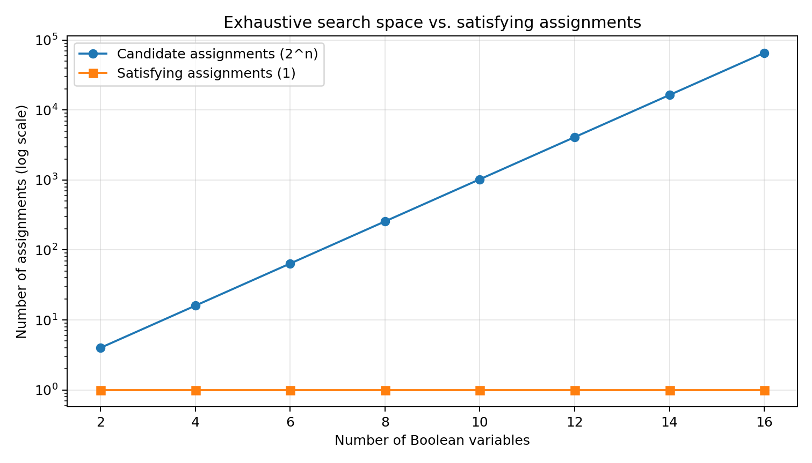

Wright's SAT Search Obstruction
A verified restricted local-search theorem, computational ablations, and an explicitly bounded 46-animal Zoo-style review.
Lean 4 build and axiom audit: PASSED · Inspect successful CI run
Named theorems checked with no axiom dependencies
Zoo screening entries (not upstream code executions)
Variables in largest exhaustive finite experiment
The mathematical object
G(x,y) = (x ∨ y) ∧ (x ∨ ¬y) ∧ (¬x ∨ y)
Unique satisfying assignment: (1,1). At (0,0), both one-bit flips leave the unsatisfied-clause count unchanged. A strictly improving local solver cannot move, even though a solution exists.
Boundary: This is not a proof that P ≠ NP. The example is in polynomial-time solvable 2-SAT, and allowing a sideways move escapes the local trap.
Lean verification
GitHub Actions used pinned Lean 4 v4.19.0. lake build succeeded; ProofAudit.lean reported no additional axiom dependencies for the eight checked theorems.
Zoo-style audit
The 46-animal review maps proof obligations and counterexamples to the canonical animal names. It does not claim to have run each animal's upstream implementation.
Read auditFinite search-space curve
The number of candidate assignments grows as 2n; this alone proves no algorithmic lower bound. The experiment illustrates the difference between enumeration and efficient solving.

View dataNext proof target
Extend the formal obstruction to arbitrarily many independent gadgets and precisely characterize the allowed update operations. Then test plateau moves, memory, branching and restart ablations.